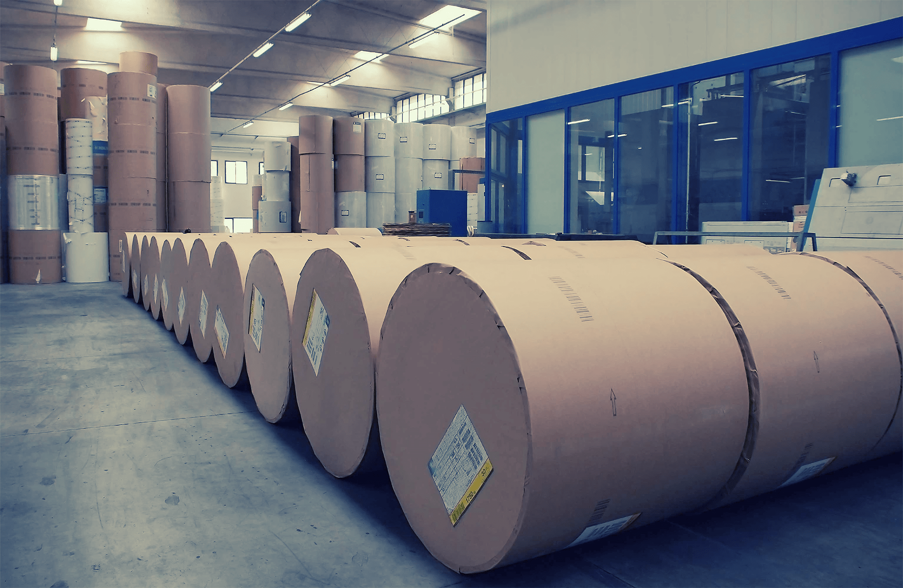
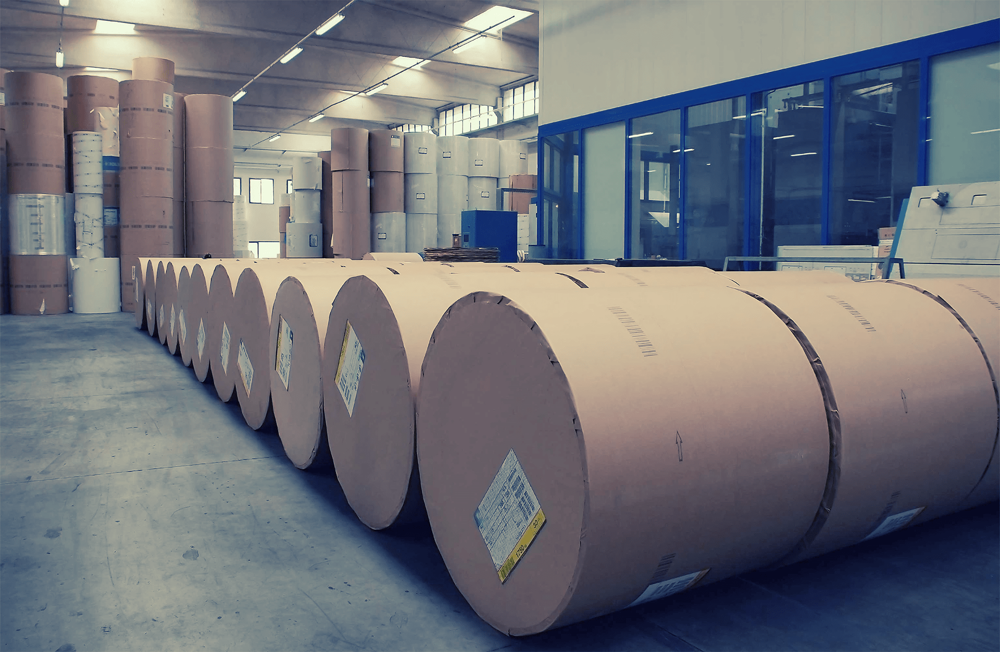

Производство
4 технологические линии спо- собны выполнить любой заказ любой сложности
4 технологические линии спо- собны выполнить любой заказ любой сложности
Флексопечать
Возможно нанесение вашего логотипа, текста или мани- пуляционных знаков
Возможно нанесение вашего логотипа, текста или мани- пуляционных знаков
Гидрофобные добавки
На производстве реализована технология, которая позволяет гофрокартону стать прочнее
На производстве реализована технология, которая позволяет гофрокартону стать прочнее

Это я!
Some representative placeholder content for the third slide.

 



Левая стрелка
Правая стрелка
Автозапуск
Пауза